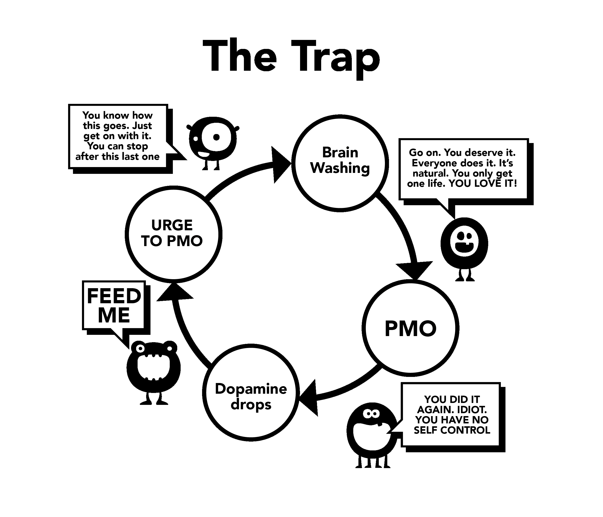

Chapter 5 Brainwashing
This is the second reason we start using. Understanding this brainwashing fully required us to first examine the powerful effects of supernormal stimulus. Our brains simply aren’t prepared for the creation of an ‘online harem’, allowing us to flick between more potential mates in fifteen minutes than our ancestors had in several lifetimes.
There’s been much misguided advice in the past, one example being that masturbation leads to blindness. This, along with other scare tactics, clearly overdid it. Misconceptions such as these were right to be overthrown by science. But the baby has been thrown out with the bath water; from our earliest years our subconscious minds are bombarded with sexual messages and imagery, magazines and advertisements loaded with innuendo. Some pop videos are extremely suggestive, but don’t despair, make it a game to identify what components they’re using — is it shock value, novelty, colour, size, taboo, nostalgia, etc. Such a game can even be taught to pre-teens as a way to educate them.
At its core, the message is “The most precious thing on this earth, my last thought and action, will be orgasm.” Is this exaggeration? Watch any TV or movie plot and you’ll see the mix up of the sensory (touch, smell, voice) and the propagative (orgasmic) parts of sex. The impact of this doesn’t register on our conscious, but the subconscious has time to absorb it.
5.1 Scientific reasoning
There’s publicity the other way: sexual dysfunction scares, loss of motivation, preferring virtual porn to real girls, YourBrainOnPorn.com and various internet subcultures, but these movements don’t actually stop people from using. Logically speaking they should, but the simple fact is they don’t. Even the health risks listed from peer-reviewed studies on YourBrainOnPorn.com aren’t enough to stop an adolescent from starting.
Ironically, the most powerful force in this confusion is the user themselves. It’s a fallacy that users are weak-willed or physically weak people. You have to be physically strong in order to cope with an addiction after you know it exists. Perhaps the most painful aspect is that they place themselves as unsuccessful losers and insufferable introverts. It’s likely that a friend could be more interesting in person if they hadn’t put themselves down for seeking self-pleasure.

5.2 Problems using willpower
Users quitting using the willpower method blame their own lack of willpower and ruin their peace and happiness. It’s one thing to fail in self-discipline and another to self-loathe. After all, there’s no law that requires you to be hard all the time before sex, properly aroused and able to satisfy your partner. We’re working on an addiction, not a habit and at no point do you argue with yourself to stop a habit like golfing, but to do the same with porn addiction is normalised — why?
Constant exposure to a supernormal stimulus rewires your brain, so building a resistance to this brainwashing is critical, as if buying a car from a second hand car dealer — nodding politely but not believing a word the man is saying. So don’t believe that you must have as much sex as you can, all of it being exceptionally good, using porn in its absence.
Don’t play the safe porn game either; your little monster invented that game to lure you. Is amateur porn certified by some authority? Porn sites gather data from their users and use it to cater to their needs, and if they see an uptick in a certain category they’ll focus on it and get content out ASAP. Don’t be fooled by educational intent or ‘safe’ female-marketed clips. Start asking yourself: “Why am I doing it? Do I really need to?”
No, of course you don’t!
Most users swear that they only watch static and soft porn and therefore are fine, when in actuality they’re straining at the leash, fighting with their willpower to resist temptations. If done too often and for too long, this depletes their willpower considerably and they begin failing in other life projects where willpower is of great value, like exercise, dieting, etc. Failure in these areas makes them feel miserable and guilty, cascading into using pornography again. If this isn’t done, they’ll vent their anger and depression onto loved ones.
Once you become addicted to internet porn, the brainwashing is increased. Your subconscious mind knows the little monster has to be fed, blocking everything else. It’s fear that keeps people from quitting, fear of that empty, insecure feeling they get when they stop flooding their brains with dopamine. Just because you’re unaware of it doesn’t mean it’s not there. You don’t have to understand it any more than a cat needs to understand where the hot water pipes are: the cat just knows that if it sits in a certain spot it feels warm.
5.3 Passivity
The passivity of our minds and dependence on authority leading to brainwashing is the primary difficulty of giving up porn. Our upbringing in society, reinforced by the brainwashing of our own addiction and combined with the most powerful - our friends, relatives and colleagues. The phrase ‘giving up’ is a classic example of the brainwashing, implying genuine sacrifice. The beautiful truth is there’s nothing to give up; on the contrary, you’ll be freeing yourself from a terrible disease and achieving marvellous positive gains. We’ll begin removing this brainwashing now, starting with no longer referring to ‘giving up’ but to stopping, quitting or perhaps the true position, escaping!
The only thing that persuades us to use initially is other people doing it and feeling that we’re missing out. We work hard to become hooked, yet we never find what they’ve been missing. Every time we see another clip it reassures us there must be something in it, otherwise people wouldn’t be doing it and the business wouldn’t be so big. Even when they kick the habit, the ex-user feels they’re being deprived when a discussion on a sexy entertainer, singer or even a porn star comes up during parties or social functions. “They must be good if all my friends talk about them, right? Do they have free pictures online?” They feel safe, they’ll just have one peek tonight and before they know it, they’re hooked again.
The brainwashing is extremely powerful and you need to be aware of its effects. Technology continues to grow and the future will bring exponentially faster sites and access methods. The porn industry is investing millions in virtual reality so that it will become the next best thing. We don’t know where we’re going, unequipped to deal with present technology or what is to come.
We’re about to remove this brainwashing. It isn’t the non-user who’s being deprived, but the user who is forfeiting a lifetime of:
Health
Energy
Wealth
Peace of mind
Confidence
Courage
Self-respect
Happiness
Freedom
What do they gain from these considerable sacrifices? ABSOLUTELY NOTHING, apart from the illusion of trying to get back to the state of peace, tranquillity and confidence that the non-user always enjoys.
5.4 Withdrawal Pangs
As explained earlier, users believe they use porn for enjoyment, relaxation or some sort of education. The actual reason is relief of withdrawal pangs. Our subconscious mind begins to learn that internet porn and masturbation at certain times tends to be pleasurable. As we become increasingly hooked on the drug, the greater the need to relieve the withdrawal pangs becomes and the further the subtle trap drags you down. This process happens so slowly that you aren’t even aware of it, most young users don’t realise they’re addicted until attempting to stop and even then, many won’t admit it.
Take this conversation a therapist had with hundreds of teenagers:
Therapist: “You realise that internet porn is a drug and the only reason why you’re using is that you cannot stop.”
Patient: “Nonsense! I enjoy it, if I didn’t, I would stop.”
Therapist: “Just stop for a week to prove to me you can if you want to.”
Patient: “No need, I enjoy it. If I wanted to stop, I would.”
Therapist: “Just stop for a week to prove to yourself you aren’t hooked.”
Patient: “What’s the point? I enjoy it.”
As already stated, users tend to relieve their withdrawal pangs at times of stress, boredom, concentration or combinations of these. In the following chapters, we’ll target these aspects of the brainwashing.